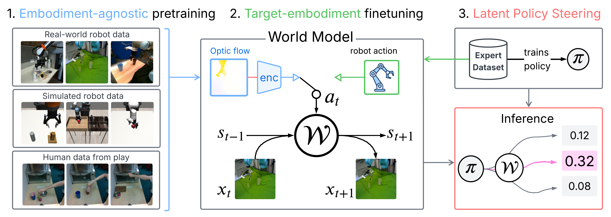

Left: We propose optical flow as an embodiment-agnostic action representation, allowing robots to make use of existing or cost-efficient data across diverse embodiments. Middle: An image-based World Model (WM) is pretrained using encoded optical flow as an action representation, and then finetuned on a target-embodiment with robot actions. Right: During inference, Latent Policy Steering evaluates multiple candidate plans and executes the best one.
Abstract
The performance of learned robot visuomotor policies is heavily dependent on the size and quality of the training dataset. Although large-scale robot and human datasets are increasingly available,
embodiment gaps and mismatched action spaces make them difficult to leverage. Our main insight is that skills performed across different embodiments produce visual similarities in motions that can be
captured using off-the-shelf action representations such as optical flow. Moreover, World Models (WMs) can leverage sub-optimal data since they focus on modeling dynamics.
In this work, we aim to improve visuomotor policies in low-data regimes by first pretraining a WM using optical flow as an embodiment-agnostic action representation to leverage accessible or easily collected data
from multiple embodiments (robots, humans). Given a small set of demonstrations on a target embodiment, we finetune the WM on this data to better align the WM predictions, train a base policy, and learn a robust value function.
Using our finetuned WM and value function, our approach evaluates action candidates from the base policy and selects the best one to improve performance. Our approach, which we term Latent Policy Steering (LPS),
improves behavior-cloned policies by 10.6% on average across four Robomimic tasks, even though most of the pretraining data comes from the real world. In the real-world experiments, LPS achieves larger gains:
70% relative improvement with 30-50 target-embodiment demonstrations, and 44% relative improvement with 60-100 demonstrations, compared to a behavior-cloned baseline.
Video
Method Overview

[Code]
Results

Paper

Creative and Descriptive Paper Title
First Author, Second Author, Third Author, Fourth Author, and Fifth Author
In Conference, 20XX.
@InProceedings{author20XXtitle,
title = {Creative and Descriptive Paper Title},
author = {Author, First and Author, Second and Author, Third and Author, Fourth and Author, Fifth},
booktitle = {Conference},
year = {20XX},
}Acknowledgements
This template was originally made by Phillip Isola and Richard Zhang for a colorful project, and inherits the modifications made by Jason Zhang. The code can be found here.